Table of Contents
Load packages/libraries
Use library() to load packages at the top of each R script.
library(tidyverse); library(data.table); library(broom); library(dtplyr);
library(lme4); library(lmerTest); library(ggbeeswarm); library(cowplot)
library(hausekeep)Read data from folder/directory into R
df1 <- tbl_dt(fread("data/simpsonsParadox.csv")) # data.table
print(df1, n = Inf)
Source: local data table [40 x 3]
# A tibble: 40 x 3
iq grades class
<dbl> <dbl> <chr>
1 94.5 67.9 a
2 95.4 82.5 a
3 97.8 69.1 a
4 98.1 83.3 a
5 96.6 99.1 a
6 102. 89.9 a
7 101. 73.7 a
8 97.1 47.9 a
9 94.2 55.6 a
10 94.4 44.5 a
11 104. 74.1 b
12 103. 59.9 b
13 102. 47.9 b
14 105. 44.9 b
15 106. 60.2 b
16 109. 64.9 b
17 107. 74.5 b
18 107. 49.9 b
19 102. 37.9 b
20 100. 54.9 b
21 111. 56.0 c
22 115. 56.0 c
23 112. 46.4 c
24 109. 43.7 c
25 111. 36.4 c
26 114. 30.2 c
27 115. 39.5 c
28 119. 51.0 c
29 113. 64.1 c
30 118 55.3 c
31 117. 17.5 d
32 121. 35.2 d
33 118. 29.9 d
34 122. 18.3 d
35 124. 29.5 d
36 121. 53.7 d
37 124. 63.7 d
38 125. 48.7 d
39 125. 38.3 d
40 128. 51.8 d
glimpse(df1)
Observations: 40
Variables: 3
$ iq <dbl> 94.5128, 95.4359, 97.7949, 98.1026, 96.5641, 101.5897, 100.8...
$ grades <dbl> 67.9295, 82.5449, 69.0833, 83.3141, 99.0833, 89.8526, 73.698...
$ class <chr> "a", "a", "a", "a", "a", "a", "a", "a", "a", "a", "b", "b", ...ggplot2 basics: layering
ggplot2 produces figures by adding layers one at a time. New layers are added using the + sign. The first line is the first/bottom-most layer, and second line is on top of the bottom layer, and third line is on top of the second layer, and the last line of code is the top-most layer.
See official documentation here.
Note: ggplot prefers long-form (tidy) data.
Layer 1: specify data object, axes, and grouping variables
Use ggplot function (not ggplot2, which is the name of the library, not a function!). Plot iq on x-axis and grades on y-axis.
ggplot(data = df1, aes(x = iq, y = grades)) # see Plots panel (empty plot with correct axis labels)
Subsequent layers: add data points and everything else
ggplot(df1, aes(iq, grades)) + # also works without specifying data, x, and y
geom_point() # add points
Each time you want to know more about a ggplot2 function, google ggplot2 function_name to see official documentation and examples and learn those examples! That’s usually how we plot figures. Even Hadley Wickham, the creator of tidyverse and many many cool things in R refers to his own online documentations all the time. There are way too many things for everyone to remember, and we usually just look them up on the internet whenever we need to use them (e.g., google ggplot2 geom point).
You’ll use geom_point() most frequently to add points to your plots. Check out the official documentation for geom_point here.
ggplot(df1, aes(iq, grades)) +
geom_point(size = 8, col = 'green') + # change size and colour
labs(y = "Exam grades (0 to 100)", x = "Intelligence (IQ)") # rename axes
ggplot(df1, aes(iq, grades)) +
geom_point(size = 3, col = 'blue') + # change size and colour
labs(y = "Exam grades (0 to 100)", x = "Intelligence (IQ)") + # rename axes
scale_y_continuous(limits = c(0, 100), breaks = c(0, 20, 40, 60, 80, 100)) + # y axis limits/range (0, 100), break points
scale_x_continuous(limits = c(90, 130)) # x axis limits/range
Save the plot as an object
plot1 <- ggplot(df1, aes(iq, grades)) +
geom_point(size = 3, col = 'red') + # change size and colour
labs(y = "Exam grades (0 to 100)", x = "Intelligence (IQ)") + # rename axes
scale_y_continuous(limits = c(0, 100), breaks = c(0, 20, 40, 60, 80, 100)) + # y axis limits/range (0, 100), break points
scale_x_continuous(limits = c(90, 130)) # x axis limits/range
plot1 # print plot
Save a plot to your directory
Save to Figures directory, assuming this directory/folder already exists. You can also change the width/height of your figure and dpi (resolution/quality) of your figure (journals usually expect around 300 dpi).
ggsave(plot1, './Figures/iq_grades.png', width = 10, heigth = 10, dpi = 100)Add line of best fit
plot1 +
geom_smooth() # fit line to data (defaults loess smoothing)
Same as above
ggplot(df1, aes(iq, grades)) +
geom_point(size = 3, col = 'red') + # change size and colour
labs(y = "Exam grades (0 to 100)", x = "Intelligence (IQ)") + # rename axes
scale_y_continuous(limits = c(0, 100), breaks = c(0, 20, 40, 60, 80, 100)) + # y axis limits/range (0, 100), break points
scale_x_continuous(limits = c(90, 130)) + # x axis limits/range
geom_smooth()
Note that the smooth (i.e., the line of best fit) is on top of the dots, because of layering. Let’s add the line first, then use geom_point(). What do you think will happen?
ggplot(df1, aes(iq, grades)) +
geom_smooth(size = 2) +
geom_point(size = 3, col = 'red') + # change size and colour
labs(y = "Exam grades (0 to 100)", x = "Intelligence (IQ)", title = 'Changed layers') + # rename axes
scale_y_continuous(limits = c(0, 100), breaks = c(0, 20, 40, 60, 80, 100)) + # y axis limits/range (0, 100), break points
scale_x_continuous(limits = c(90, 130))# x axis limits/range 
Note that now the points are above the line. Also, I’ve added a title via the labs() line.
ggplot(df1, aes(iq, grades)) +
geom_point(size = 3, col = 'red') + # change size and colour
labs(y = "Exam grades (0 to 100)", x = "Intelligence (IQ)") + # rename axes
scale_y_continuous(limits = c(0, 100), breaks = c(0, 20, 40, 60, 80, 100)) + # y axis limits/range (0, 100), break points
scale_x_continuous(limits = c(90, 130)) + # x axis limits/range
geom_smooth(method = 'lm', se = F, col = 'black') # fit linear regression line, remove standard error, black line
Why is IQ negatively correlated with grades?
Grouping
Use col to specify grouping variable
Note what’s new in the first line/layer to add grouping.
ggplot(df1, aes(iq, grades, col = class)) +
geom_point(size = 3) + # change size and colour
labs(y = "Exam grades (0 to 100)", x = "Intelligence (IQ)") + # rename axes
scale_y_continuous(limits = c(0, 100), breaks = c(0, 20, 40, 60, 80, 100)) + # y axis limits/range (0, 100), break points
scale_x_continuous(limits = c(90, 130)) + # x axis limits/range
geom_smooth(method = 'lm', se = F) # fit linear regression line ggplot(df1, aes(iq, grades, col = class)) specifies the data to plot df1, x-axis iq, y-axis grades, and to give different colours to different groups col = class, where class refers to the grouping variable in the dataset.
What is the relationship between IQ and grades within each class now? What happened?!?
Use shape to specify grouping variable
ggplot(df1, aes(iq, grades, shape = class)) +
geom_point(size = 3) + # change size and colour
labs(y = "Exam grades (0 to 100)", x = "Intelligence (IQ)") + # rename axes
scale_y_continuous(limits = c(0, 100), breaks = c(0, 20, 40, 60, 80, 100)) + # y axis limits/range (0, 100), break points
scale_x_continuous(limits = c(90, 130)) + # x axis limits/range
geom_smooth(method = 'lm', se = F) # fit linear regression line Adding an overall line of best fit while ignoring class
ggplot(df1, aes(iq, grades, col = class)) +
geom_point(size = 3) + # change size and colour
labs(y = "Exam grades (0 to 100)", x = "Intelligence (IQ)") + # rename axes
scale_y_continuous(limits = c(0, 100), breaks = c(0, 20, 40, 60, 80, 100)) + # y axis limits/range (0, 100), break points
scale_x_continuous(limits = c(90, 130)) + # x axis limits/range
geom_smooth(method = 'lm', se = F, aes(group = 1)) # fit linear regression line 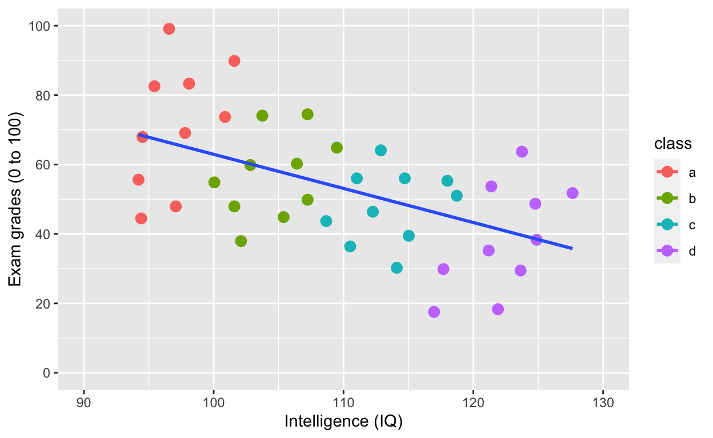
Adding an overall line of best fit AND separate lines for each group
plot2 <- ggplot(df1, aes(iq, grades, col = class)) +
geom_point(size = 3) + # change size and colour
labs(y = "Exam grades (0 to 100)", x = "Intelligence (IQ)") + # rename axes
scale_y_continuous(limits = c(0, 100), breaks = c(0, 20, 40, 60, 80, 100)) + # y axis limits/range (0, 100), break points
scale_x_continuous(limits = c(90, 130)) + # x axis limits/range
geom_smooth(method = 'lm', se = F) + # fit linear regression line
geom_smooth(method = 'lm', se = F, aes(group = 1))
plot2Simpson’s paradox: Negative overall relationship, but positive relationship within each class.
Plotting histograms, boxplots, and violinplots
Histogram
ggplot(df1, aes(iq)) +
geom_histogram()
Specifying binwidth
ggplot(df1, aes(iq)) +
geom_histogram(binwidth = 5)
Density plot
ggplot(df1, aes(iq)) +
geom_density()Boxplot for each class
ggplot(df1, aes(class, grades)) +
geom_boxplot()
Violinplot for each class
ggplot(df1, aes(class, grades)) +
geom_violin()
Layering and colouring plots
ggplot(df1, aes(class, grades, col = class)) +
geom_violin() +
geom_boxplot() +
geom_point()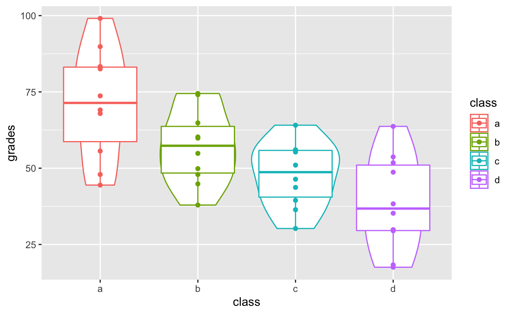
Distribution of points with geom_quasirandom()
An alternative that I prefer more than both boxplots and violin plots: geom_quasirandom() from the ggbeeswarm package. See here for more information.
geom_quasirandom() extends geom_point() by showing the distribution information at the same time. It basically combines all the good things in geom_boxplot, geom_violin, geom_point and geom_histogram.
ggplot(df1, aes(class, grades, col = class)) +
geom_quasirandom()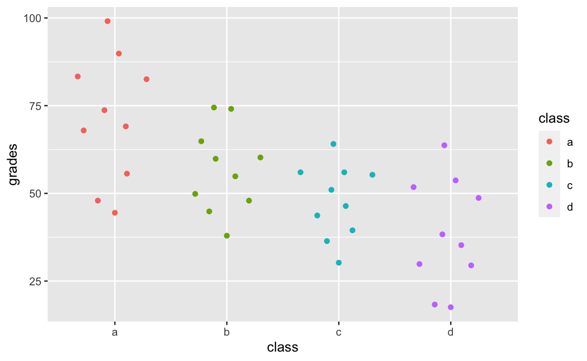
df1$overallClass <- "one_class" # create variable that assigns everyone to one class
# df1[, overallClass := "one_class"] # data.table syntax for the line abovegeom_quasirandom shows distribution information!
ggplot(df1, aes(overallClass, grades)) + # y: grades
geom_quasirandom()
ggplot(df1, aes(overallClass, iq)) + # y: iq
geom_quasirandom() +
labs(x = "") # remove x-axis label (compare with above)
Summary statistics with ggplot2
stat_summary() can quickly help you compute summary statistics and plot them. If you get a warning message about Hmisc package, just install that package using install.packages('Hmisc') and then library(Hmisc)
ggplot(df1, aes(class, iq)) + # y: iq
geom_quasirandom(alpha = 0.3) +
stat_summary(fun.y = mean, geom = 'point', size = 3) + # apply mean function to y axis (fun.y = mean)
stat_summary(fun.data = mean_cl_normal, geom = 'errorbar', width = 0, size = 1) # apply mean_cl_normal function to data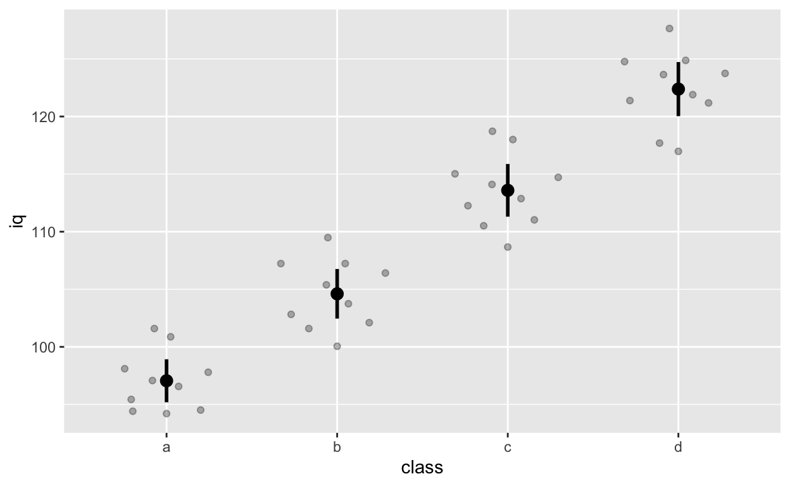
Facets for grouping: facet_wrap() and facet_grid()
Randomly assign gender to each row (see previous tutorial for detailed explanation of the code below)
df1$gender <- sample(x = c("female", "male"), size = 40, replace = T)Code from before
ggplot(df1, aes(iq, grades)) +
geom_point(size = 3) + # change size and colour
labs(y = "Exam grades (0 to 100)", x = "Intelligence (IQ)") + # rename axes
scale_y_continuous(limits = c(0, 100), breaks = c(0, 20, 40, 60, 80, 100)) + # y axis limits/range (0, 100), break points
scale_x_continuous(limits = c(90, 130)) + # x axis limits/range
geom_smooth(method = 'lm', se = F)
Using facets instead of col = class. See the last line of code facet_wrap().
facet_wrap(): one facet per class
ggplot(df1, aes(iq, grades)) +
geom_point(size = 2) + # change size and colour
labs(y = "Exam grades (0 to 100)", x = "Intelligence (IQ)") + # rename axes
scale_y_continuous(limits = c(0, 100), breaks = c(0, 20, 40, 60, 80, 100)) + # y axis limits/range (0, 100), break points
scale_x_continuous(limits = c(90, 130)) + # x axis limits/range
geom_smooth(method = 'lm', se = F) +
facet_wrap(~class) # one facet per class
facet_wrap(): one facet per class and gender
ggplot(df1, aes(iq, grades)) +
geom_point(size = 2) + # change size and colour
labs(y = "Exam grades (0 to 100)", x = "Intelligence (IQ)") + # rename axes
scale_y_continuous(limits = c(0, 100), breaks = c(0, 20, 40, 60, 80, 100)) + # y axis limits/range (0, 100), break points
scale_x_continuous(limits = c(90, 130)) + # x axis limits/range
geom_smooth(method = 'lm', se = F) +
facet_wrap(class~gender) # one facet per class and gender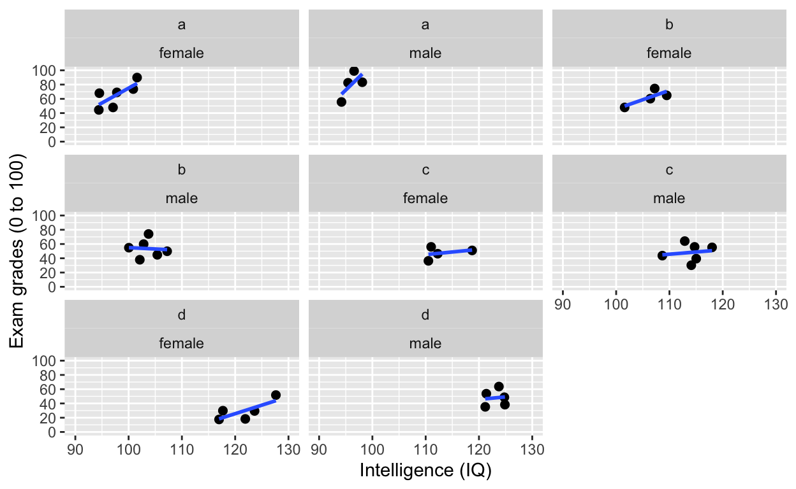
facet_grid(): one facet per gender
ggplot(df1, aes(iq, grades)) +
geom_point(size = 2) + # change size and colour
labs(y = "Exam grades (0 to 100)", x = "Intelligence (IQ)") + # rename axes
scale_y_continuous(limits = c(0, 100), breaks = c(0, 20, 40, 60, 80, 100)) + # y axis limits/range (0, 100), break points
scale_x_continuous(limits = c(90, 130)) + # x axis limits/range
geom_smooth(method = 'lm', se = F) +
facet_grid(.~gender) # one facet per gender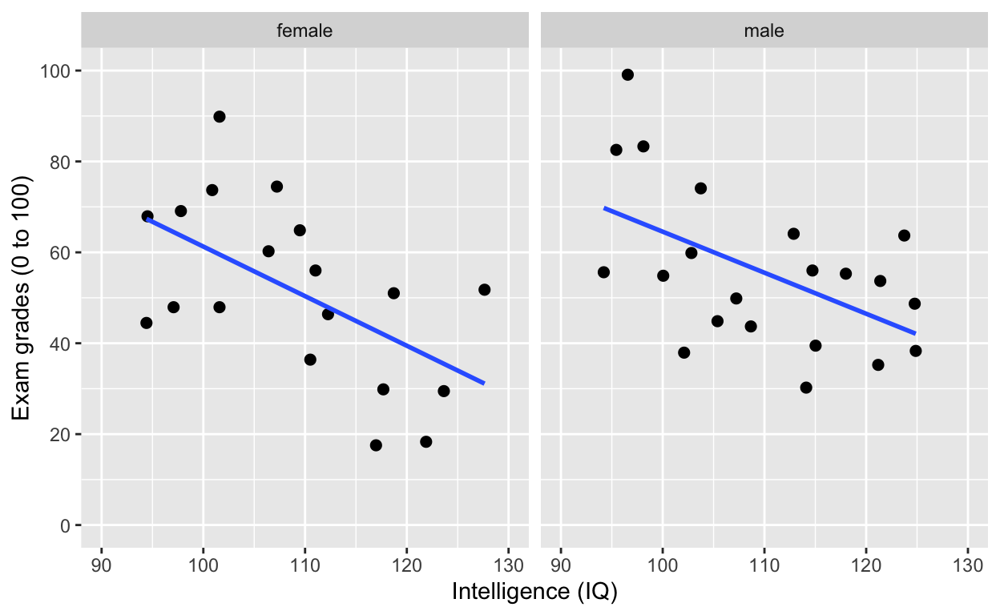
facet_grid(): one facet per gender
ggplot(df1, aes(iq, grades)) +
geom_point(size = 2) + # change size and colour
labs(y = "Exam grades (0 to 100)", x = "Intelligence (IQ)") + # rename axes
scale_y_continuous(limits = c(0, 100), breaks = c(0, 20, 40, 60, 80, 100)) + # y axis limits/range (0, 100), break points
scale_x_continuous(limits = c(90, 130)) + # x axis limits/range
geom_smooth(method = 'lm', se = F) +
facet_grid(gender~.) # one facet per gender
facet_grid(): one facet per class and gender
ggplot(df1, aes(iq, grades)) +
geom_point(size = 2) + # change size and colour
labs(y = "Exam grades (0 to 100)", x = "Intelligence (IQ)") + # rename axes
scale_y_continuous(limits = c(0, 100), breaks = c(0, 20, 40, 60, 80, 100)) + # y axis limits/range (0, 100), break points
scale_x_continuous(limits = c(90, 130)) + # x axis limits/range
geom_smooth(method = 'lm', se = F) +
facet_grid(gender~class) # one facet per gender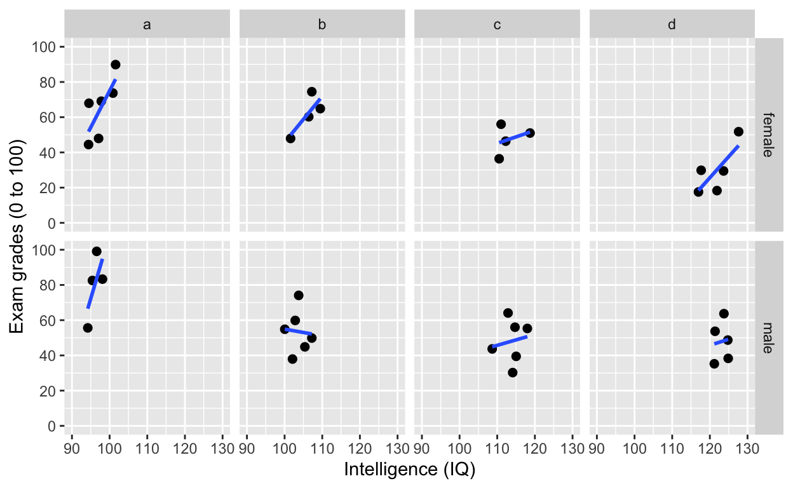
facet_grid(): one facet per class and gender
Add variable name
ggplot(df1, aes(iq, grades)) +
geom_point(size = 2) + # change size and colour
labs(y = "Exam grades (0 to 100)", x = "Intelligence (IQ)") + # rename axes
scale_y_continuous(limits = c(0, 100), breaks = c(0, 20, 40, 60, 80, 100)) + # y axis limits/range (0, 100), break points
scale_x_continuous(limits = c(90, 130)) + # x axis limits/range
geom_smooth(method = 'lm', se = F) +
facet_grid(gender~class, labeller = label_both) # one facet per gender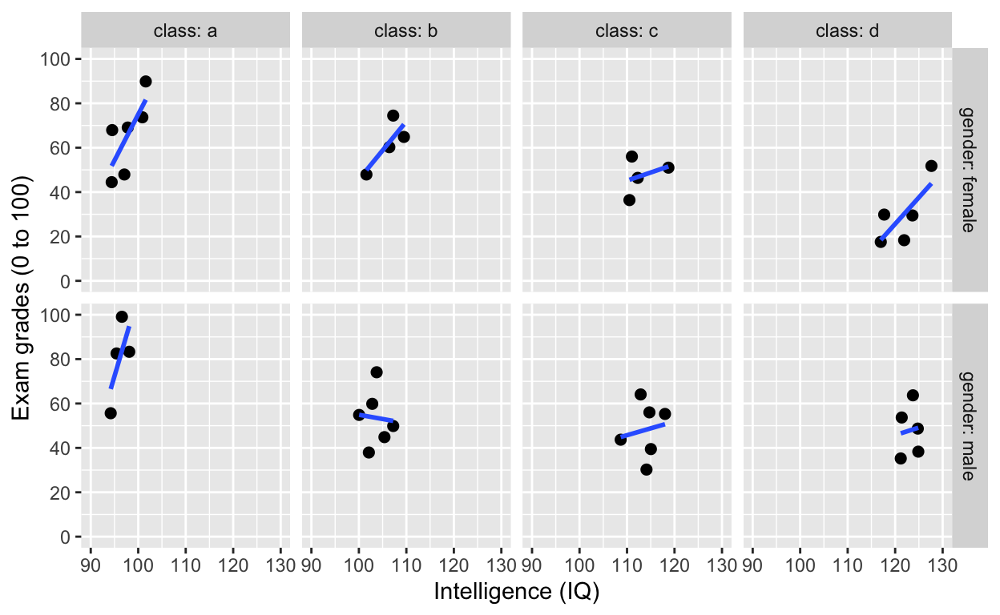
Fitting linear models (general linear model framework)
Fit a model to this this relationship
ggplot(df1, aes(iq, grades)) +
geom_point() +
labs(y = "Exam grades (0 to 100)", x = "Intelligence (IQ)") + # rename axes
scale_y_continuous(limits = c(0, 100), breaks = c(0, 20, 40, 60, 80, 100)) + # y axis limits/range (0, 100), break points
scale_x_continuous(limits = c(90, 130)) + # x axis limits/range
geom_smooth(method = 'lm', se = F, col = 'black') # fit linear regression line, remove standard error, black line
Model specification in R
- most model fitting functions prefer long-form data (aka tidy data)
- ~ is the symbol for “prediction” (read: “predicted by”)
- y ~ x: y predicted by x (y is outcome/dependent variable, x is predictor/independent variable)
lm(y ~ x, data)is the most commonly-used and flexible function (linear model)- covariates and predictors are specified in the same way (unlike SPSS)
Test the relationship in the plot above
modelLinear <- lm(formula = iq ~ grades, data = df1)
summary(modelLinear) # get model results and p values
Call:
lm(formula = iq ~ grades, data = df1)
Residuals:
Min 1Q Median 3Q Max
-17.7002 -4.9650 0.3856 6.0826 17.6721
Coefficients:
Estimate Std. Error t value Pr(>|t|)
(Intercept) 125.14212 4.23923 29.520 < 2e-16 ***
grades -0.29306 0.07479 -3.919 0.000359 ***
---
Signif. codes: 0 '***' 0.001 '**' 0.01 '*' 0.05 '.' 0.1 ' ' 1
Residual standard error: 8.599 on 38 degrees of freedom
Multiple R-squared: 0.2878, Adjusted R-squared: 0.2691
F-statistic: 15.36 on 1 and 38 DF, p-value: 0.0003592
summaryh(modelLinear) # generates APA-formmatted results
term results
1: (Intercept) b = 125.14, SE = 4.24, t(38) = 29.52, p < .001, r = 0.98
2: grades b = −0.29, SE = 0.07, t(38) = −3.92, p < .001, r = 0.54Note the significant negative relationship between iq and grades.
Since we know that class “moderates” the effect between iq and grades, let’s “control” for class by adding class into the model specification.
ggplot(df1, aes(iq, grades, col = class)) +
geom_point(size = 3) + # change size and colour
labs(y = "Exam grades (0 to 100)", x = "Intelligence (IQ)") + # rename axes
scale_y_continuous(limits = c(0, 100), breaks = c(0, 20, 40, 60, 80, 100)) + # y axis limits/range (0, 100), break points
scale_x_continuous(limits = c(90, 130)) + # x axis limits/range
geom_smooth(method = 'lm', se = F) + # fit linear regression line
geom_smooth(method = 'lm', se = F, aes(group = 1))
Test the relationship above by “controlling” for class
modelLinear_class <- lm(iq ~ grades + class, data = df1)
summary(modelLinear_class) # get model results and p values
Call:
lm(formula = iq ~ grades + class, data = df1)
Residuals:
Min 1Q Median 3Q Max
-4.5552 -2.2276 -0.1403 2.0785 4.8499
Coefficients:
Estimate Std. Error t value Pr(>|t|)
(Intercept) 90.74793 2.48240 36.557 < 2e-16 ***
grades 0.08841 0.03251 2.720 0.0101 *
classb 8.82731 1.33606 6.607 1.24e-07 ***
classc 18.61047 1.46538 12.700 1.15e-14 ***
classd 28.21349 1.64119 17.191 < 2e-16 ***
---
Signif. codes: 0 '***' 0.001 '**' 0.01 '*' 0.05 '.' 0.1 ' ' 1
Residual standard error: 2.796 on 35 degrees of freedom
Multiple R-squared: 0.9306, Adjusted R-squared: 0.9227
F-statistic: 117.4 on 4 and 35 DF, p-value: < 2.2e-16
summaryh(modelLinear_class)
term results
1: (Intercept) b = 90.75, SE = 2.48, t(35) = 36.56, p < .001, r = 0.99
2: grades b = 0.09, SE = 0.03, t(35) = 2.72, p = .010, r = 0.42
3: classb b = 8.83, SE = 1.34, t(35) = 6.61, p < .001, r = 0.74
4: classc b = 18.61, SE = 1.47, t(35) = 12.70, p < .001, r = 0.91
5: classd b = 28.21, SE = 1.64, t(35) = 17.19, p < .001, r = 0.95Note the significantly positive relationship between iq and grades now.
Reference groups and releveling (changing reference group)
R automatically recodes categorical/factor variables into 0s and 1s (i.e., dummy-coding). Alphabets/letters/characters/numbers that come first (a comes before b) will be coded 0, and those that follow will be coded 1.
In our case, class “a” has been coded 0 (reference group) and all other classes (“b”, “c”, “d”) are contrasted against it, hence you have 3 other effects (“classb”, “classc”, “classd”) that reflect the difference between class “a” and each of the other classes.
To change reference group, use as.factor() and relevel()
To change reference groups, you first have to convert your grouping variable to factor class, which explicitly tells R your variable is a categorical/factor variable. Then use relevel() to change the reference group.
df1$class <- relevel(as.factor(df1$class), ref = "d")
levels(df1$class) # check reference levels (d is now the reference/first group)
[1] "d" "a" "b" "c"
summaryh(lm(iq ~ grades + class, data = df1)) # quickly fit model and look at outcome (no assignment to object)
term results
1: (Intercept) b = 118.96, SE = 1.54, t(35) = 77.41, p < .001, r = 1.00
2: grades b = 0.09, SE = 0.03, t(35) = 2.72, p = .010, r = 0.42
3: classa b = −28.21, SE = 1.64, t(35) = −17.19, p < .001, r = 0.95
4: classb b = −19.39, SE = 1.38, t(35) = −14.01, p < .001, r = 0.92
5: classc b = −9.60, SE = 1.29, t(35) = −7.47, p < .001, r = 0.78Specify interactions
- y predicted by x1, x2, and their interactions: y ~ x1 + x2 + x1:x2
- concise expression: y ~ x1 * x2 (includes all main effects and interaction)
modelLinear_interact <- lm(iq ~ grades + class + grades:class, data = df1)
summary(modelLinear_interact)
Call:
lm(formula = iq ~ grades + class + grades:class, data = df1)
Residuals:
Min 1Q Median 3Q Max
-4.6623 -2.3238 -0.2229 1.9845 4.9309
Coefficients:
Estimate Std. Error t value Pr(>|t|)
(Intercept) 117.56287 2.57958 45.574 < 2e-16 ***
grades 0.12459 0.06237 1.998 0.05433 .
classa -25.29661 4.70506 -5.376 6.64e-06 ***
classb -18.39902 5.29099 -3.477 0.00148 **
classc -6.97275 5.18349 -1.345 0.18802
grades:classa -0.05745 0.08226 -0.698 0.48993
grades:classb -0.02894 0.10111 -0.286 0.77653
grades:classc -0.06191 0.11112 -0.557 0.58131
---
Signif. codes: 0 '***' 0.001 '**' 0.01 '*' 0.05 '.' 0.1 ' ' 1
Residual standard error: 2.898 on 32 degrees of freedom
Multiple R-squared: 0.9319, Adjusted R-squared: 0.917
F-statistic: 62.52 on 7 and 32 DF, p-value: < 2.2e-16
summaryh(modelLinear_interact)
term results
1: (Intercept) b = 117.56, SE = 2.58, t(32) = 45.57, p < .001, r = 0.99
2: grades b = 0.12, SE = 0.06, t(32) = 2.00, p = .054, r = 0.33
3: classa b = −25.30, SE = 4.71, t(32) = −5.38, p < .001, r = 0.69
4: classb b = −18.40, SE = 5.29, t(32) = −3.48, p = .002, r = 0.52
5: classc b = −6.97, SE = 5.18, t(32) = −1.35, p = .188, r = 0.23
6: grades:classa b = −0.06, SE = 0.08, t(32) = −0.70, p = .490, r = 0.12
7: grades:classb b = −0.03, SE = 0.10, t(32) = −0.29, p = .776, r = 0.05
8: grades:classc b = −0.06, SE = 0.11, t(32) = −0.56, p = .581, r = 0.10Intercept-only model
R uses 1 to refer to the intercept
modelLinear_intercept <- lm(iq ~ 1, data = df1) # mean iq
summaryh(modelLinear_intercept)
term results
1: (Intercept) b = 109.41, SE = 1.59, t(39) = 68.80, p < .001, r = 1.00
df1[, mean(iq)] # matches the intercept term
[1] 109.4077
mean(df1$iq) # same as above
[1] 109.4077Remove intercept from model (if you ever need to do so…) by specifying -1
modelLinear_noIntercept <- lm(iq ~ grades - 1, data = df1) # substract intercept
summary(modelLinear_noIntercept)
Call:
lm(formula = iq ~ grades - 1, data = df1)
Residuals:
Min 1Q Median 3Q Max
-81.586 -6.131 14.935 35.214 88.969
Coefficients:
Estimate Std. Error t value Pr(>|t|)
grades 1.7980 0.1158 15.52 <2e-16 ***
---
Signif. codes: 0 '***' 0.001 '**' 0.01 '*' 0.05 '.' 0.1 ' ' 1
Residual standard error: 41.52 on 39 degrees of freedom
Multiple R-squared: 0.8607, Adjusted R-squared: 0.8571
F-statistic: 241 on 1 and 39 DF, p-value: < 2.2e-16
summaryh(modelLinear_noIntercept)
term results
1: grades b = 1.80, SE = 0.12, t(39) = 15.52, p < .001, r = 0.93Fitting ANOVA with anova and aov
By default, R uses Type I sum of squares.
Let’s test this model with ANOVA.
ggplot(df1, aes(class, iq)) + # y: iq
geom_quasirandom(alpha = 0.3) +
stat_summary(fun.y = mean, geom = 'point', size = 3) + # apply mean function to y axis (fun.y = mean)
stat_summary(fun.data = mean_cl_normal, geom = 'errorbar', width = 0, size = 1) # apply mean_cl_normal function to data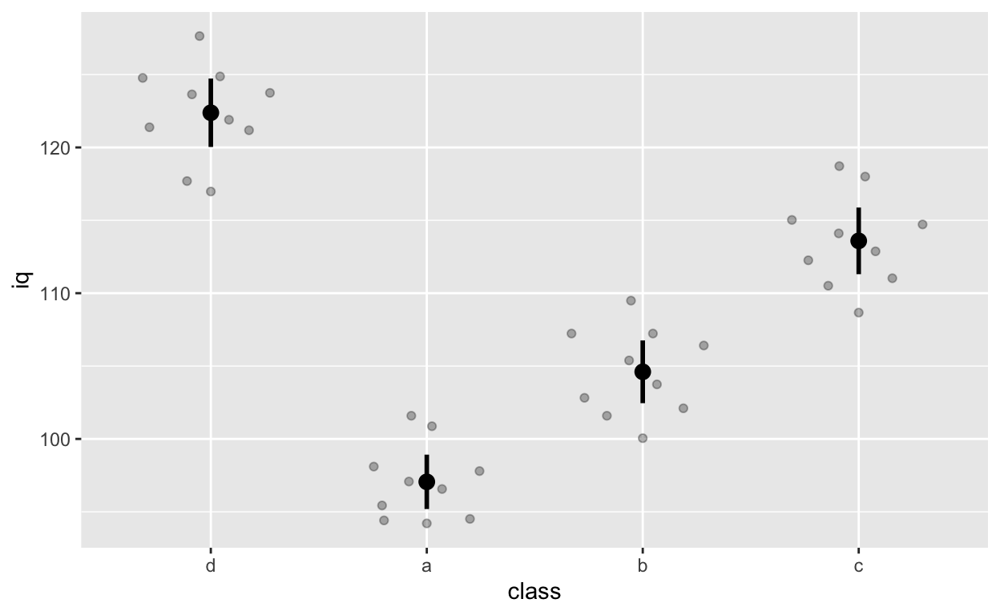
Note that class d comes first because we releveled it earlier on (we changed the reference group to d).
Fit ANOVA with aov()
anova_class <- aov(grades ~ class, data = df1)
summary(anova_class)
Df Sum Sq Mean Sq F value Pr(>F)
class 3 5821 1940.4 9.44 9.73e-05 ***
Residuals 36 7400 205.6
---
Signif. codes: 0 '***' 0.001 '**' 0.01 '*' 0.05 '.' 0.1 ' ' 1
summaryh(anova_class)
term results
1: class F(3, 36) = 9.44, p < .001, r = 0.66Class * gender interaction (and main effects)
ggplot(df1, aes(class, iq, col = gender)) + # y: iq
geom_quasirandom(alpha = 0.3, dodge = 0.5) +
stat_summary(fun.y = mean, geom = 'point', size = 3, position = position_dodge(0.5)) +
stat_summary(fun.data = mean_cl_normal, geom = 'errorbar',
width = 0, size = 1, position = position_dodge(0.5))
anova_classGender <- aov(grades ~ class * gender, data = df1)
summary(anova_classGender)
Df Sum Sq Mean Sq F value Pr(>F)
class 3 5821 1940.4 9.115 0.000165 ***
gender 1 30 29.7 0.140 0.711067
class:gender 3 558 186.1 0.874 0.464538
Residuals 32 6812 212.9
---
Signif. codes: 0 '***' 0.001 '**' 0.01 '*' 0.05 '.' 0.1 ' ' 1
summaryh(anova_classGender)
term results
1: class F(3, 32) = 9.12, p < .001, r = 0.68
2: gender F(1, 32) = 0.14, p = .711, r = 0.07
3: class:gender F(3, 32) = 0.87, p = .465, r = 0.28Specify contrasts resources
Post-hoc tests resources
Plotting and testing simple effects when you have interactions
sjPlotpackage: see here- more tutorial and packages
Fit t-test with t.test()
Fit models for this figure
ggplot(df1, aes(class, iq, col = gender)) + # y: iq
geom_quasirandom(alpha = 0.3, dodge = 0.5) +
stat_summary(fun.y = mean, geom = 'point', size = 3, position = position_dodge(0.5)) +
stat_summary(fun.data = mean_cl_normal, geom = 'errorbar',
width = 0, size = 1, position = position_dodge(0.5))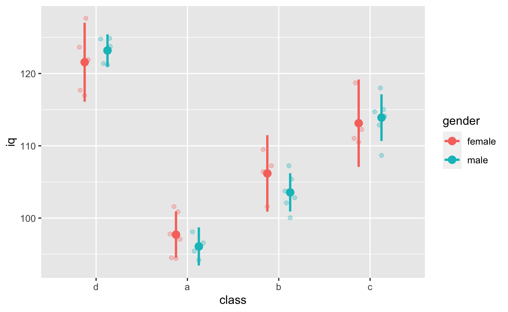
Gender effect
ttest_gender <- t.test(iq ~ gender, data = df1)
ttest_gender
Welch Two Sample t-test
data: iq by gender
t = 0.40685, df = 37.264, p-value = 0.6864
alternative hypothesis: true difference in means is not equal to 0
95 percent confidence interval:
-5.196097 7.807838
sample estimates:
mean in group female mean in group male
109.9953 108.6895
summaryh(ttest_gender)
results
1: t(37) = 0.41, p = .686, r = 0.07class a vs. class d
ttest_classAD <- t.test(iq ~ class, data = df1[class %in% c("a", "d")]) # data.table subsetting
ttest_classAD
Welch Two Sample t-test
data: iq by class
t = 19.105, df = 17.128, p-value = 5.488e-13
alternative hypothesis: true difference in means is not equal to 0
95 percent confidence interval:
22.52811 28.11803
sample estimates:
mean in group d mean in group a
122.37948 97.05641
summaryh(ttest_classAD, showTable = T) # show all other effect sizes
$results
results
1: t(17) = 19.10, p < .001, r = 0.98
$results2
term df statistic p.value es.r es.d
1: iq by class 17.128 19.105 0 0.977 9.233Multi-level (hierarchical) model with lmer() from the lme4 package
Rather than “control” for class when fitting models to test the relationship between iq and grades below, we can use multi-level models to specify nesting within the data. See here for beautiful visual introduction to multi-level models.
Another function is nlme() from the lme package. We use both nlme() and lmer(), depending on our needs.
ggplot(df1, aes(iq, grades, col = class)) +
geom_point(size = 3) + # change size and colour
labs(y = "Exam grades (0 to 100)", x = "Intelligence (IQ)") + # rename axes
scale_y_continuous(limits = c(0, 100), breaks = c(0, 20, 40, 60, 80, 100)) + # y axis limits/range (0, 100), break points
scale_x_continuous(limits = c(90, 130)) + # x axis limits/range
geom_smooth(method = 'lm', se = F) + # fit linear regression line
geom_smooth(method = 'lm', se = F, aes(group = 1))Model specification with lmer()
- y ~ x (same as other models)
- (1 | group): varying intercept (one intercept per group)
- (1 + x | group): varying intercept and slope (one intercept and slope per group)
Random intercept model (fixed slope)
m_intercept <- lmer(grades ~ iq + (1 | class), data = df1)
summary(m_intercept)
Linear mixed model fit by REML. t-tests use Satterthwaite's method [
lmerModLmerTest]
Formula: grades ~ iq + (1 | class)
Data: df1
REML criterion at convergence: 326
Scaled residuals:
Min 1Q Median 3Q Max
-1.71341 -0.79563 0.03887 0.56708 2.18978
Random effects:
Groups Name Variance Std.Dev.
class (Intercept) 895.5 29.92
Residual 176.7 13.29
Number of obs: 40, groups: class, 4
Fixed effects:
Estimate Std. Error df t value Pr(>|t|)
(Intercept) -100.7338 74.1311 27.4649 -1.359 0.1852
iq 1.4115 0.6633 31.3429 2.128 0.0413 *
---
Signif. codes: 0 '***' 0.001 '**' 0.01 '*' 0.05 '.' 0.1 ' ' 1
Correlation of Fixed Effects:
(Intr)
iq -0.979
summaryh(m_intercept)
term results
1: (Intercept) b = −100.73, SE = 74.13, t(27) = −1.36, p = .185, r = 0.25
2: iq b = 1.41, SE = 0.66, t(31) = 2.13, p = .041, r = 0.36
coef(m_intercept) # check coefficients for each class
$class
(Intercept) iq
d -133.42844 1.411459
a -66.31753 1.411459
b -90.94790 1.411459
c -112.24144 1.411459
attr(,"class")
[1] "coef.mer"By accounting for nesting within class, the relationship between iq and grades is positive!
Random intercept and slope model
m_interceptSlope <- lmer(grades ~ iq + (1 + iq | class), data = df1)
summary(m_interceptSlope)
Linear mixed model fit by REML. t-tests use Satterthwaite's method [
lmerModLmerTest]
Formula: grades ~ iq + (1 + iq | class)
Data: df1
REML criterion at convergence: 326
Scaled residuals:
Min 1Q Median 3Q Max
-1.71461 -0.79955 0.04047 0.56706 2.19534
Random effects:
Groups Name Variance Std.Dev. Corr
class (Intercept) 4.180e+02 20.44479
iq 7.853e-03 0.08862 1.00
Residual 1.765e+02 13.28371
Number of obs: 40, groups: class, 4
Fixed effects:
Estimate Std. Error df t value Pr(>|t|)
(Intercept) -101.7384 73.4587 20.6522 -1.385 0.1808
iq 1.4270 0.6677 19.6229 2.137 0.0454 *
---
Signif. codes: 0 '***' 0.001 '**' 0.01 '*' 0.05 '.' 0.1 ' ' 1
Correlation of Fixed Effects:
(Intr)
iq -0.978
convergence code: 0
singular fit
summaryh(m_interceptSlope)
term results
1: (Intercept) b = −101.74, SE = 73.46, t(21) = −1.38, p = .181, r = 0.29
2: iq b = 1.43, SE = 0.67, t(20) = 2.14, p = .045, r = 0.43
coef(m_interceptSlope) # check coefficients for each class
$class
(Intercept) iq
d -123.68895 1.331876
a -77.86894 1.530486
b -95.42589 1.454384
c -109.96969 1.391343
attr(,"class")
[1] "coef.mer"Random slope model (fixed intercept)
m_slope <- lmer(grades ~ iq + (0 + iq | class), data = df1)
summary(m_slope)
Linear mixed model fit by REML. t-tests use Satterthwaite's method [
lmerModLmerTest]
Formula: grades ~ iq + (0 + iq | class)
Data: df1
REML criterion at convergence: 326
Scaled residuals:
Min 1Q Median 3Q Max
-1.71468 -0.75940 0.02992 0.57631 2.20673
Random effects:
Groups Name Variance Std.Dev.
class iq 0.07825 0.2797
Residual 176.30986 13.2782
Number of obs: 40, groups: class, 4
Fixed effects:
Estimate Std. Error df t value Pr(>|t|)
(Intercept) -102.5776 72.8997 31.8195 -1.407 0.1691
iq 1.4484 0.6854 27.8155 2.113 0.0437 *
---
Signif. codes: 0 '***' 0.001 '**' 0.01 '*' 0.05 '.' 0.1 ' ' 1
Correlation of Fixed Effects:
(Intr)
iq -0.979
summaryh(m_slope)
term results
1: (Intercept) b = −102.58, SE = 72.90, t(32) = −1.41, p = .169, r = 0.24
2: iq b = 1.45, SE = 0.69, t(28) = 2.11, p = .044, r = 0.37
coef(m_slope) # check coefficients for each class
$class
(Intercept) iq
d -102.5776 1.159490
a -102.5776 1.784924
b -102.5776 1.522970
c -102.5776 1.326058
attr(,"class")
[1] "coef.mer"More multi-level model resources
MANOVA
Let’s use a different dataset. iris, a famous dataset that comes with R. Type ?iris in your console for more information about this dataset.
irisDT <- tbl_dt(iris) # convert to data.table and tibble
irisDT # wide form data
Source: local data table [150 x 5]
# A tibble: 150 x 5
Sepal.Length Sepal.Width Petal.Length Petal.Width Species
<dbl> <dbl> <dbl> <dbl> <fct>
1 5.1 3.5 1.4 0.2 setosa
2 4.9 3 1.4 0.2 setosa
3 4.7 3.2 1.3 0.2 setosa
4 4.6 3.1 1.5 0.2 setosa
5 5 3.6 1.4 0.2 setosa
6 5.4 3.9 1.7 0.4 setosa
7 4.6 3.4 1.4 0.3 setosa
8 5 3.4 1.5 0.2 setosa
9 4.4 2.9 1.4 0.2 setosa
10 4.9 3.1 1.5 0.1 setosa
# ... with 140 more rowsThe dataset is in wide form. To visualize easily with ggplot, we need to convert it to long form (more on converting between forms) in future tutorials.
gather(irisDT, meaureLength, length, -Species) %>% # convert from wide to long form
tbl_dt() %>% # convert to data.table and tibble
ggplot(aes(Species, length, col = meaureLength)) + # no need to specify data because of piping
geom_quasirandom(alpha = 0.3, dodge = 0.5) 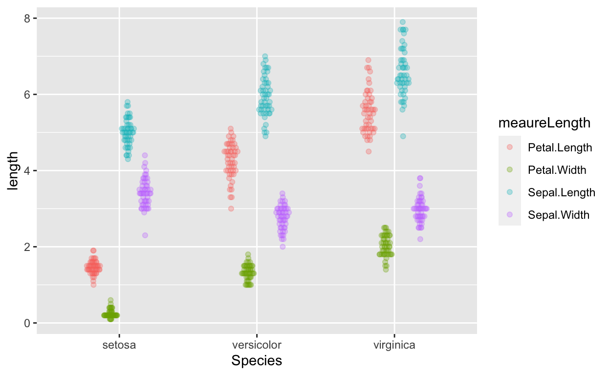
MANOVA to test if species predicts length of sepal length and petal length?

outcome <- cbind(irisDT$Sepal.Length, irisDT$Petal.Length) # cbind (column bind)
manova_results <- manova(outcome ~ Species, data = iris)
summary(manova_results) # manova results
Df Pillai approx F num Df den Df Pr(>F)
Species 2 0.9885 71.829 4 294 < 2.2e-16 ***
Residuals 147
---
Signif. codes: 0 '***' 0.001 '**' 0.01 '*' 0.05 '.' 0.1 ' ' 1
summary.aov(manova_results) # see which outcome variables differ
Response 1 :
Df Sum Sq Mean Sq F value Pr(>F)
Species 2 63.212 31.606 119.26 < 2.2e-16 ***
Residuals 147 38.956 0.265
---
Signif. codes: 0 '***' 0.001 '**' 0.01 '*' 0.05 '.' 0.1 ' ' 1
Response 2 :
Df Sum Sq Mean Sq F value Pr(>F)
Species 2 437.10 218.551 1180.2 < 2.2e-16 ***
Residuals 147 27.22 0.185
---
Signif. codes: 0 '***' 0.001 '**' 0.01 '*' 0.05 '.' 0.1 ' ' 1MANOVA resources
Computing between- and within-subjects error bars (also between-within designs)
Error bars for between- and within-subjects designs have to be calculated differently. There’s much debate on how to compute within-subjects this properly…
cw <- tbl_dt(ChickWeight) # convert built-in ChickWeight data to data.table and tibbledata information
- ID variable: Chick (50 chicks)
- outcome/dependent variable: weight (weight of Chick) (within-subjects variable)
- predictor/indepedent variable: Diet (diet each Chick was assigned to) (between-subjects variable)
cw # weight of 50 chicks are different times, on different diets
Source: local data table [578 x 4]
# A tibble: 578 x 4
weight Time Chick Diet
<dbl> <dbl> <ord> <fct>
1 42 0 1 1
2 51 2 1 1
3 59 4 1 1
4 64 6 1 1
5 76 8 1 1
6 93 10 1 1
7 106 12 1 1
8 125 14 1 1
9 149 16 1 1
10 171 18 1 1
# ... with 568 more rows
cw[, unique(Time)] # time points
[1] 0 2 4 6 8 10 12 14 16 18 20 21
cw[, n_distinct(Chick)] # no. of Chicks
[1] 50
cw[, unique(Diet)] # Diets
[1] 1 2 3 4
Levels: 1 2 3 4Between-subject error bars
Do different diets lead to different weights? Each chick is only assigned to one diet (rather than > 1 diet), so we can use between-subjects error bars (or confidence intervals).
ggplot(cw, aes(Diet, weight)) +
geom_quasirandom(alpha = 0.3) + # this line plots raw data and can be omitted, depending on your plotting preferences
stat_summary(fun.y = mean, geom = 'point', size = 5) + # compute mean and plot
stat_summary(fun.data = mean_cl_normal, geom = 'errorbar', width = 0, size = 1) # compute between-sub confidence intervals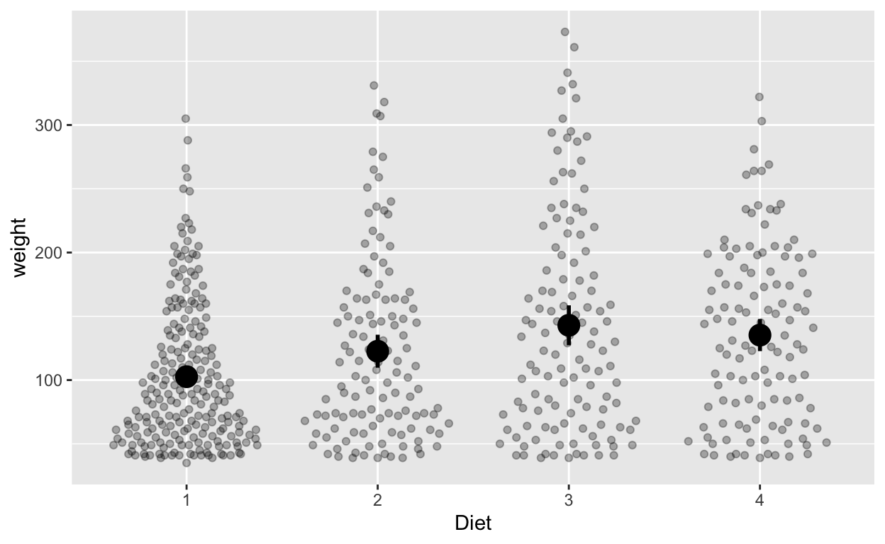
Within-subject error bars
How does weight change over time (ignoring diet)? Each chick has multiple measurements of time, so we’ll use within-subjects error bars, which we have to calculate ourselves. Use seWithin() from the hausekeep package to compute within-subjects error bars.
cw_weight_withinEB <- seWithin(data = cw, measurevar = c("weight"),
withinvars = c("Time"), idvar = "Chick")
Confidence intervals: 0.95 Time N weight sd se ci
1: 0 50 41.06000 34.68062 4.904580 9.856123
2: 2 50 49.22000 33.12237 4.684210 9.413273
3: 4 49 59.95918 30.00113 4.285876 8.617331
4: 6 49 74.30612 26.56071 3.794387 7.629126
5: 8 49 91.24490 20.70396 2.957709 5.946873
6: 10 49 107.83673 15.34996 2.192851 4.409023
7: 12 49 129.24490 12.59951 1.799931 3.619003
8: 14 48 143.81250 13.08456 1.888593 3.799360
9: 16 47 168.08511 20.31087 2.962645 5.963495
10: 18 47 190.19149 30.93940 4.512975 9.084148
11: 20 46 209.71739 41.22034 6.077607 12.240929
12: 21 45 218.68889 47.40924 7.067352 14.243313The output contains the mean weight at each time, number of values (N), standard deviation, standard error, and confidence interval (default 95% unless you change via the conf.interval argument). The output contains information you’ll use for plotting with ggplot.
Plot with within-subjects error bars
ggplot(cw_weight_withinEB, aes(Time, weight)) +
geom_quasirandom(data = cw, alpha = 0.1) + # this line plots raw data and can be omitted, depending on your plotting
geom_point() + # add points
geom_errorbar(aes(ymin = weight - ci, ymax = weight + ci), width = 0) # ymin (lower bound), ymax (upper bound)
Note the second line geom_quasirandom(data = cw, alpha = 0.1) adds the raw data to the plot (hence data = cw). Depending your data structure and research questions, you might have to compute your “raw data” for the plot differently before specifying it in geom_quasirandom().
Plot with between-subjects error bars (WRONG but illustrative purposes)
ggplot(cw, aes(Time, weight)) +
geom_quasirandom(alpha = 0.1) + # this line plots raw data and can be omitted, depending on your plotting preferences
stat_summary(fun.y = mean, geom = 'point') + # compute mean and plot
stat_summary(fun.data = mean_cl_normal, geom = 'errorbar', width = 0) # compute between-sub confidence intervals
Mixed (between-within) designs
Let’s investigate the effects of time (within-subjects) and diet (between-subjects) together.
cw_weight_mixed <- seWithin(data = cw, measurevar = c("weight"),
betweenvars = c("Diet"), withinvars = c("Time"),
idvar = "Chick")
Confidence intervals: 0.95 Diet Time N weight sd se ci
1: 1 0 20 41.40000 32.196088 7.199264 15.068233
2: 1 2 20 47.25000 31.222053 6.981463 14.612371
3: 1 4 19 56.47368 28.049332 6.434958 13.519345
4: 1 6 19 66.78947 24.955540 5.725194 12.028185
5: 1 8 19 79.68421 21.023526 4.823128 10.133015
6: 1 10 19 93.05263 14.874487 3.412441 7.169273
7: 1 12 19 108.52632 11.572480 2.654909 5.577757
8: 1 14 18 123.38889 13.870327 3.269267 6.897551
9: 1 16 17 144.64706 21.984518 5.332029 11.303396
10: 1 18 17 158.94118 26.584912 6.447788 13.668700
11: 1 20 17 170.41176 34.320498 8.323943 17.645972
12: 1 21 16 177.75000 38.237769 9.559442 20.375469
13: 2 0 10 40.70000 33.604854 10.626788 24.039464
14: 2 2 10 49.40000 33.861652 10.707994 24.223166
15: 2 4 10 59.80000 32.265022 10.203096 23.081006
16: 2 6 10 75.40000 29.958647 9.473756 21.431125
17: 2 8 10 91.70000 19.417095 6.140224 13.890153
18: 2 10 10 108.50000 10.777143 3.408032 7.709503
19: 2 12 10 131.30000 11.275312 3.565567 8.065872
20: 2 14 10 141.90000 15.284023 4.833232 10.933531
21: 2 16 10 164.70000 22.990849 7.270345 16.446662
22: 2 18 10 187.70000 33.389549 10.558702 23.885444
23: 2 20 10 205.60000 41.917684 13.255536 29.986105
24: 2 21 10 214.70000 50.885426 16.091385 36.401241
25: 3 0 10 40.80000 28.276080 8.941682 20.227489
26: 3 2 10 50.40000 27.594930 8.726283 19.740223
27: 3 4 10 62.20000 26.660100 8.430664 19.071487
28: 3 6 10 77.90000 23.431511 7.409694 16.761893
29: 3 8 10 98.40000 17.857046 5.646894 12.774161
30: 3 10 10 117.10000 12.021922 3.801665 8.599965
31: 3 12 10 144.40000 11.947923 3.778265 8.547029
32: 3 14 10 164.50000 12.590895 3.981591 9.006984
33: 3 16 10 197.40000 19.229222 6.080814 13.755756
34: 3 18 10 233.10000 32.170338 10.173154 23.013273
35: 3 20 10 258.90000 40.861992 12.921696 29.230908
36: 3 21 10 270.30000 48.717298 15.405762 34.850255
37: 4 0 10 41.00000 17.382195 5.496733 12.434473
38: 4 2 10 51.80000 16.818054 5.318336 12.030911
39: 4 4 10 64.50000 17.046321 5.390520 12.194203
40: 4 6 10 83.90000 17.247248 5.454059 12.337938
41: 4 8 10 105.60000 16.883489 5.339028 12.077720
42: 4 10 10 126.00000 16.639228 5.261786 11.902987
43: 4 12 10 151.40000 12.808176 4.050301 9.162417
44: 4 14 10 161.80000 9.155805 2.895320 6.549668
45: 4 16 10 182.00000 11.204764 3.543258 8.015406
46: 4 18 10 202.90000 19.553833 6.183465 13.987970
47: 4 20 9 233.88889 29.101735 9.700578 22.369574
48: 4 21 9 238.55556 34.977292 11.659097 26.885927
Diet Time N weight sd se ciNow your summary output has an extra Diet column.
ggplot(cw_weight_mixed, aes(Time, weight, col = as.factor(Diet))) + # Diet is numeric but we want it to be a factor/categorical variable
geom_quasirandom(data = cw, alpha = 0.3, dodge = 0.7) + # this line plots raw data and can be omitted, depending on your plotting
geom_point(position = position_dodge(0.7), size = 2.5) + # add points
geom_errorbar(aes(ymin = weight - ci, ymax = weight + ci), width = 0, position = position_dodge(0.7), size = 1) + # ymin (lower bound), ymax (upper bound)
labs(col = "Diet")